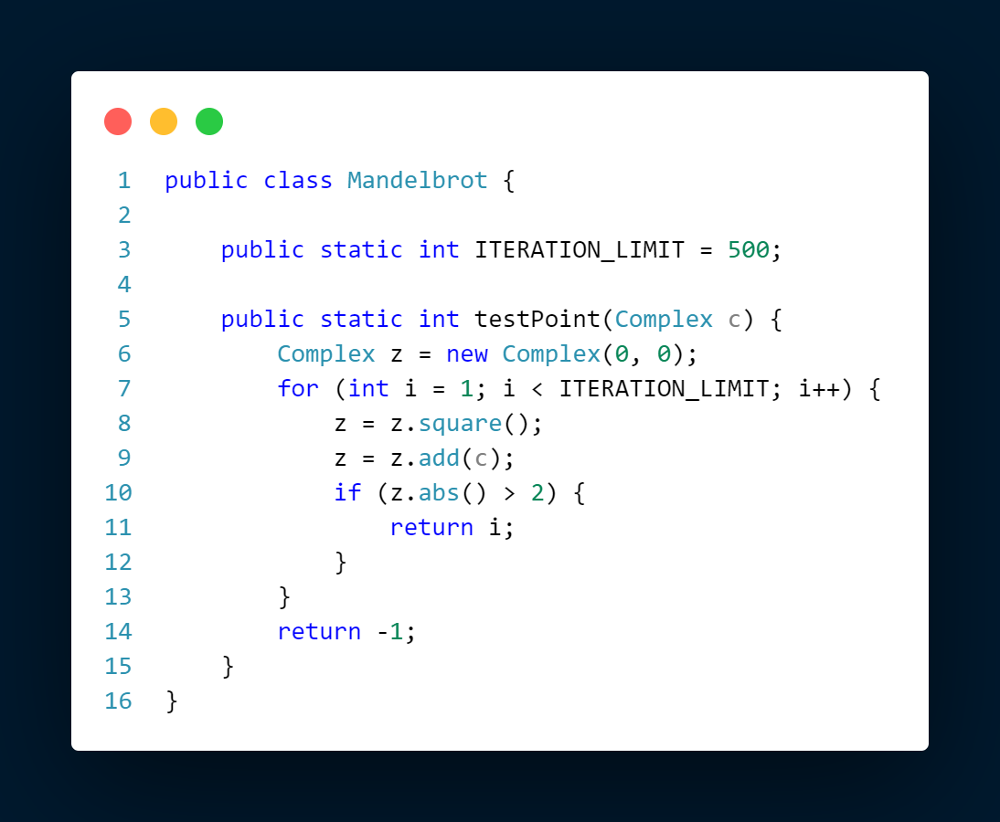
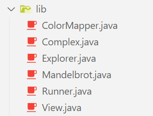
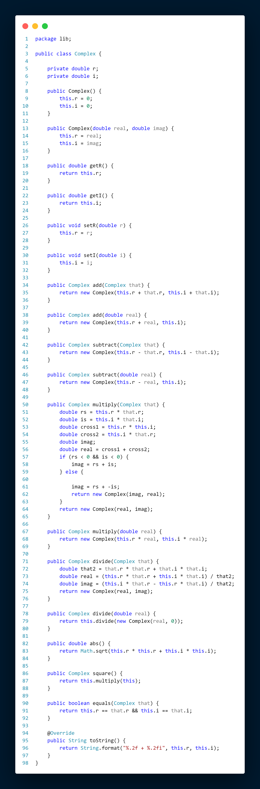

Mandelbrot Explorer App
A real-time, multi-threaded Mandelbrot set explorer written in Java.
Generated in real time, this multi-threaded Java program lets you explore the Mandelbrot set. You can zoom in by dragging over a portion of the display and change the maximum number of iterations with the 'X' and 'C' keys, as demonstrated in the video.
The math

The algorithm for the Mandelbrot set is
Zn+1 = Zn2 +
C
Object-oriented design

By leaning on object-oriented programming, the Mandelbrot equation above becomes very simple to implement.
For example, this is my complex numbers class, which handles anything I would ever need to do with complex numbers.
